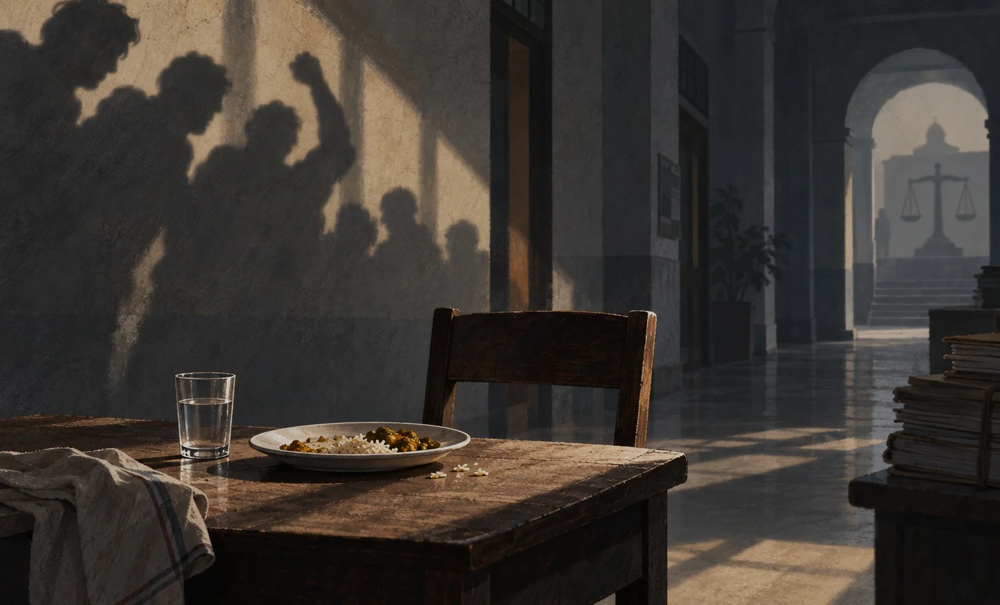

We are sorry, Tofazzel
For a few minutes, Tofazzel was sitting in a canteen eating rice like anyone else. Someone had to serve him the food. Someone watched him eat. Someone spoke to him. Then he was taken back and beaten again. How does a person do both?

Two years after Tofazzel Hossain was fed a meal and then beaten to death inside a Dhaka University hall, the trial has yet to begin. His family is still waiting.
Of everything that happened to Tofazzel Hossain that night, I keep coming back to the food.
He had been detained at Dhaka University’s Fazlul Huq Muslim Hall on suspicion of stealing a mobile phone. He was beaten. At one point, the students took him to the canteen and gave him rice. Someone asked him how the food tasted. Then he was taken to another guest room and beaten again, according to bdnews24.
He was declared dead at Dhaka Medical College Hospital after midnight.
Two years have passed since September 18, 2024. The country has moved on through one crisis after another. But Tofazzel’s case has not even reached trial.
According to bdnews24, the Police Bureau of Investigation submitted a charge sheet against 28 people. Two are in jail, nine are on bail and 17 remain absconding. Arrest warrants have been issued for the absconding accused.
For his family, that means the waiting is not over.
It is easy to remember Tofazzel only by the way he died. But he had a life before that night.
He was from Patharghata in Barguna. A friend told bdnews24 that Tofazzel had completed a master’s degree in accounting from BM College in Barishal. His cousin Asma Akter Tania said his father had died in a road accident and his mother died later. His elder brother, a police sub-inspector who had looked after him and helped with his treatment, died of cancer in 2023.
His relatives said his mental health deteriorated after the deaths in his family. He began wandering around Dhaka and became a familiar face to some students around the university. Shortly after his death that he would often wander around the campus and halls and eat when someone offered him food.
By the time he entered Fazlul Huq Hall that night, he was already a man who had lost almost everyone he could depend on.
Even then, someone was trying to save him.
His cousin Tania learnt that he was being beaten and called a student. She asked them to let him go and told them he had a mental health condition.
They did not let him go.
This is one of the details that makes the case difficult to explain away as a few seconds of anger. There was time. Time to stop. Time to check the allegation. Time to call the police. Time to listen to his family.
There was even time to take him downstairs and feed him.
Tofazzel was held inside the hall for more than three hours. He was assaulted in one guest room, taken to the dining room to eat, and then moved to another guest room where he was beaten again.
That is what stays with me.
For a few minutes, Tofazzel was sitting in a canteen eating rice like anyone else. Someone had to serve him the food. Someone watched him eat. Someone spoke to him. Then he was taken back and beaten again.
How does a person do both?
Maybe that is why the word “thief” matters so much in this story. Once the label was attached to him, everything else about him seemed to disappear. His name. His family. His mental health condition. His right to explain himself. His right to be handed over to the police. His right, simply, to stay alive.
He had not been convicted of anything.
And even if he had stolen something, nothing could have made what happened to him lawful or acceptable.
We often call such killings “mob justice”. But there was no justice in that hall. There was an accusation, a group of people and a man who had nowhere to run.
When the videos and photographs came out, the killing drew widespread outrage. They spread on social media. People wrote about him. They shared his picture. They condemned the killing. For a few days, it felt as if Tofazzel was everywhere.
Then, as happens so often, attention moved elsewhere.
But his family could not move elsewhere.
That is the part we rarely stay with. For the public, a killing becomes a headline, then an old headline. For a family, there is no such distance. There are court dates, phone calls, news of bail, news that someone is absconding, and the same question: when will the trial begin?
So what did Tofazzel’s death change? It is a hard question because the answer seems to be: not enough.
Perhaps that is why, two years later, the words that come most naturally are these:
We are sorry, Tofazzel.
We are sorry that people listened to an accusation before they listened to you.
We are sorry that your family called and still could not get you out.
We are sorry that people knew you were unwell and it made no difference.
We are sorry that videos and photographs of your final hours spread across social media, that so many people were shaken by what happened, and that the country still went on seeing the same kind of violence.
And we are sorry that two years later, your case has yet to reach trial.
But saying sorry is the easy part.
What your family needs is not another round of public sympathy on September 18. They need the accused to face court. They need the evidence heard. They need a verdict. They need to know that Tofazzel’s death did not disappear into another long case file.
The rest of us need to remember something simpler.
A mob does not begin with the final blow.
It begins earlier. With an accusation. With a label. With someone saying “thief” and others deciding that proof can come later. With people standing around. With the first slap no one stops. With the moment a human being becomes an accusation.
That night, they gave Tofazzel rice.
They fed him.
Then they beat him again.
We are sorry, Tofazzel.
Two years later, we should have more to offer than that.
𝘼𝙧𝙖𝙛𝙖𝙩 𝙍𝙖𝙝𝙖𝙢𝙖𝙣 𝙞𝙨 𝙖 𝙟𝙤𝙪𝙧𝙣𝙖𝙡𝙞𝙨𝙩 𝙖𝙩 𝙏𝙝𝙚 𝘿𝙖𝙞𝙡𝙮 𝙎𝙩𝙖𝙧. 𝙃𝙚 𝙘𝙤𝙫𝙚𝙧𝙨 𝙚𝙙𝙪𝙘𝙖𝙩𝙞𝙤𝙣 𝙖𝙣𝙙 𝙬𝙧𝙞𝙩𝙚𝙨 𝙤𝙣 𝙜𝙤𝙫𝙚𝙧𝙣𝙖𝙣𝙘𝙚, 𝙧𝙞𝙜𝙝𝙩𝙨 𝙖𝙣𝙙 𝙥𝙪𝙗𝙡𝙞𝙘 𝙖𝙘𝙘𝙤𝙪𝙣𝙩𝙖𝙗𝙞𝙡𝙞𝙩𝙮.